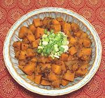

|
Pumpkin with Panch PhoronIndia - Bihar - Panch Phoron Kohra | ||||
| Makes: Effort: Sched: DoAhead: |
1-1/3 # *** 1 hr Yes |
A relatively dry squash dish that's very interestingly spiced, and not too chili hot. It's great as a vegetarian main dish for two, served with rice, or as an appetizer. | |||
|
|
1 ------- 7 ------- 2 3 2-1/2 ------- 2 1 1 1/2 ------- 2 1/2 1/2 ------- ar ------- ar |
# --- oz --- cl t --- t t t t --- T c T --- --- |
Kabocha Squash (1) -- Aromatics Onion -- Tempering Red Chili, dry (2) Garlic Panch Phoron (3) -- Seasonings Coriander Seed Turmeric Chili Powder (4) Salt --------- Mustard Oil (5) Water (6) Lime Juice -- Garnish Cilantro Leaves -- Serve with Basmati Rice |
PREP (25 min)
|
imv_pmppph1 211011 bhok103 - www.clovegarden.com
©Andrew Grygus - agryg@clovegarden.com - Linking
to and non-commercial use of this page is permitted.